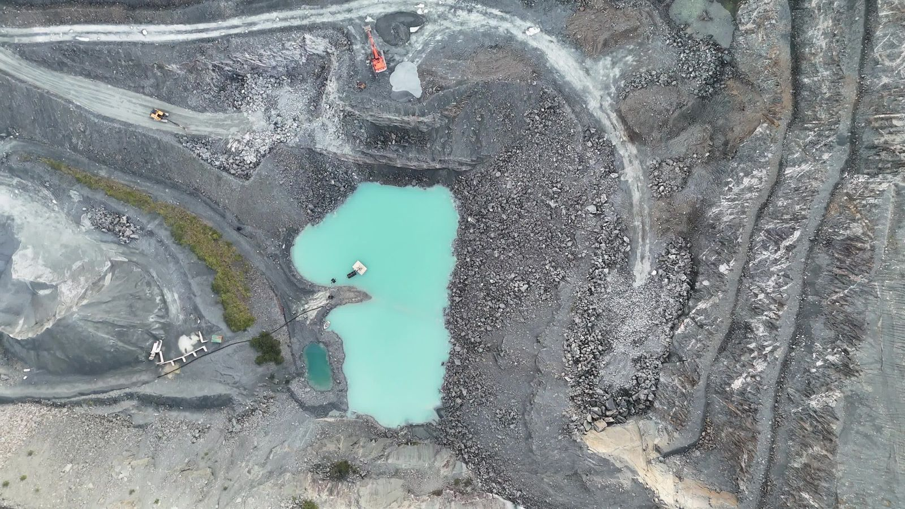
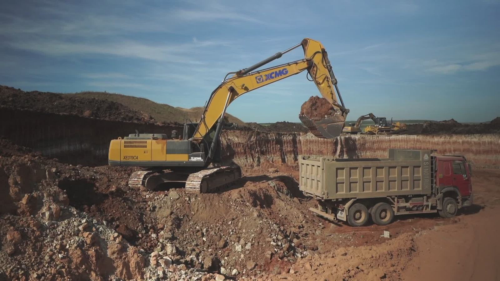
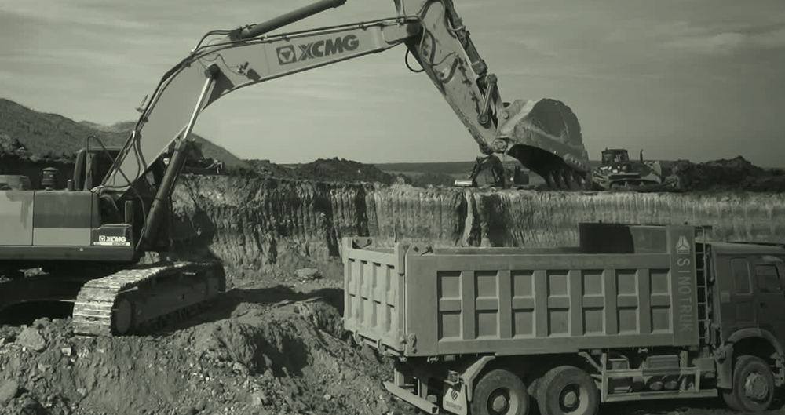
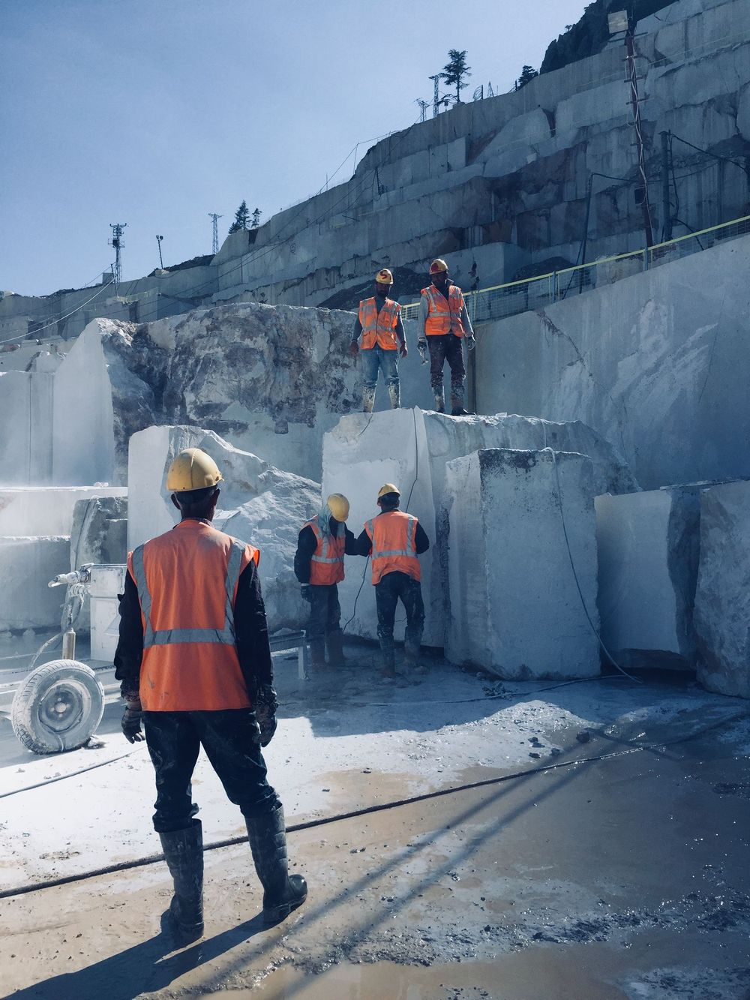

Cada movimiento
cuenta.
Convertimos las cámaras de minas y canteras en registros que muestran dónde se pierden horas y dólares.

Una mina es una fila de camiones. Y la espera suele quedar sin medir.
- Un camión parado sigue costando.Chofer, combustible, equipo y capacidad que no produce.
- En muchas operaciones, se anota a mano.Planillas, remitos y radio. Sin datos, cada turno es una opinión.
- Lo que no se ve, no se corrige.La pérdida es chica por viaje y grande a fin de mes.
Las cámaras ya están. Les enseñamos a medir.
Ve
La cámara registra cada llegada, carga y salida en un punto: un acceso, una balanza o una zona de carga.
Mide
Calcula los minutos de espera, los viajes y el uso de la flota, con la foto de cada evento.
Decide
La mina ajusta turnos y despacho, y compara el resultado contra su línea de base: cómo estaba antes.

ZONA DE CARGA · CÁMARA 0109:53:03Imagen ilustrativa- Llega el camión T-014
- Espera en la fila12 min
- Empieza la carga
- Sale cargado
Un minuto menos por viaje paga el servicio.
Cinco ahorran USD 78.000 al año.
Después de pagar el abono de USD 1.200 por mes, al cliente le quedan USD 5.300 por mes. Con un solo minuto menos por viaje, USD 1.300 por mes, ya se paga el abono.
La minería argentina vive su mejor momento. Y necesita producir mejor.
2026: sólido el primer semestre, punteado la estimación de CAEM (más de 9.000). 2035: 22.000 según CAEM y 36.250 según la Secretaría de Minería.
El mercado, contado de abajo hacia arriba.
| Primer mercado: operaciones en producción en Argentina | Operaciones | Puntos c/u supuesto | Puntos | Ingreso anual |
|---|---|---|---|---|
| Canteras, minas medianas y plantas de tratamiento500 operaciones × 2 puntos (supuesto) | 500* | 2 | 1.000 | USD 14,4 M |
| Minas grandes en producción26 minas × 10 puntos (supuesto) | 26 | 10 | 260 | USD 3,7 M |
| Total | 1.260 | USD 18,1 M |
* Escenario de trabajo a validar. Referencia: el censo minero nacional relevó unas 1.730 empresas productoras en 2016, la mayoría de rocas y minerales industriales; cuántas encajan con el producto lo dirán los pilotos. Usamos 2 puntos de promedio porque muchas canteras tienen uno o dos; los primeros clientes se eligen entre las más grandes y suman cámaras de seguridad, hasta unos 5. Abono de USD 1.200 por punto por mes. La meta, 50 puntos, es el 4%.
Después, con el mismo producto
- Minería nueva310 proyectos en cartera y 13 con RIGI aprobado, algunos son ampliaciones. Todavía no los sumamos.
- Logística de cargasUnos 2 millones de camiones pasan por el Gran Rosario en cada cosecha.
- Chile y PerúCarteras mineras de USD 104.549 M y USD 64.075 M.
Cobramos por punto, todos los meses.
Piloto pago
60 a 90 días en un punto, con la instalación incluida. Medimos la línea de base y el ahorro real.
Precio: USD … · filtra a quien no va a comprar
Abono mensual
Precio fijo por punto, con el equipo de proceso y el soporte incluidos.
Referencia: USD 1.200 por punto por mes
Más puntos
Accesos, balanzas, depósitos y talleres. Cada cámara activa es un punto.
Crecer dentro del cliente cuesta menos que conseguir otro
Los sistemas de flota miden camiones. Nosotros medimos el lugar.
| Planillas y radio | Cámaras de seguridadcon o sin analítica básica | Sistemas de flota con GPSModular Mining, Cat MineStar, Hexagon, Wenco | Voxxel | |
|---|---|---|---|---|
| Mide colas y esperas | A mano | Algunas, por zona | Sí, con GPS | Sí, desde la cámara |
| Guarda la imagen de cada evento | No | Alertas sueltas | No | Sí |
| Cuenta camiones de contratistas | A mano | Cuentan, sin registro por camión | Solo los equipados | Todo vehículo visible |
| Qué hace falta para empezar | Nada | Nada | Equipo en cada camión | Un punto y un equipo |
| Equipo local, en castellano | Sí | Depende | Depende | Sí |
La misma cámara también cuida a las personas.
- Casco y chaleco, a la vista.Aviso con foto cuando alguien pasa sin protección.
- Zonas prohibidas, con reglas.Personas o vehículos donde no deben estar, a la hora que no deben.
- Combustible y materiales, con control.Movimientos fuera de horario en depósitos y accesos.

De un piloto a un negocio que se repite.
Probar
- Socio minero como primera persona comercial, junto al CEO
- 3 pilotos pagos en canteras y minas medianas, elegidas entre las más grandes
- Medir ahorro, horas de instalación y soporte por punto
3 casos con números propios
Vender
- Si los 3 pilotos pasan a abono (los elegimos con el socio minero), crecen a unos 5 puntos, con cámaras de seguridad
- Segunda persona comercial desde el mes 6
- Embudo supuesto: 40 conversaciones → 12 pilotos
15 puntos activosy 12 pilotos nuevos en curso
Repetir
- 7 de esos 12 pilotos pasan a abono (supuesto: 6 de cada 10)
- Cada uno crece a unos 5 puntos
50 puntos contratados10 clientes × 5 puntos · USD 720.000 por año en abonos, una vez activos
Ya pusimos IA a funcionar en el campo. Con la ronda sumamos al socio minero.
Nombre y apellido
Trayectoria en una línea. Responsable de clientes, alianzas y la relación con inversores.
Nombre y apellido
Diseñó y puso en funcionamiento sensores de IA que analizan video en el lugar, en proyecto o empresa, con energía y conexión inestables.
Socio de operación minera
Alguien que haya dirigido operaciones en una mina argentina. Es la primera persona comercial: abre las primeras puertas junto al CEO.
Estado: nombre / en conversaciones / búsqueda abierta
Entra con: sueldo + participación
Buscamos USD monto para llegar a 50 puntos en 18 meses.
- InstrumentoSAFE / acciones / préstamo convertible
- Lo que habilita la próxima ronda50 puntos contratados, 3 casos de ahorro medidos y el margen por punto confirmado.
En qué se usa
Empecemos por
un punto.
Buscamos USD monto para llegar a 50 puntos en 18 meses.
Un punto. Una cámara. Un número que se mide.
- [05] Exportaciones 2024 (USD 4.673 M) y 2025 (USD 6.073 M): Secretaría de Minería, EITI. argentina.gob.ar. Otras fuentes informan entre USD 6.037 M y 6.075 M para 2025.
- [05] 1.er semestre 2026 (USD 4.742 M, +74,4%): CAEM y BCR con datos de la Secretaría, vía Infobae, 25/09/2026. infobae.com
- [05] Escenarios 2030 (USD 15.411 M) y 2035 (USD 36.250 M): Secretaría de Minería, abril 2026, vía Bloomberg Línea. CAEM, 2026 (más de USD 9.000 M, estimado) y 2035 (USD 22.000 M): Minería & Desarrollo, 04/05/2026.
- [05, 06] RIGI: 13 proyectos mineros aprobados por USD 28.000 M: argentina.gob.ar, 28/10/2026. Detalle por proyecto, anterior y con un total menor (más de USD 25.000 M; incluye ampliaciones de minas existentes): Minería & Desarrollo, 05/10/2026. El total vigente es el oficial.
- [08, 14] Competidores: Softlabs (registro de camiones en canteras, caso propio) y Verkada (medición de colas de vehículos), consultados en noviembre de 2026.
- [05] Codelco y videoanalítica de riesgos: El Desconcierto, 21/11/2025.
- [06] 26 minas en producción y 310 proyectos en cartera: Invecq, enero 2026, vía El Economista, 31/01/2026.
- [06] Censo Nacional a la Actividad Minera CeNAM-17 (INDEC y Secretaría de Minería, datos 2016): unas 1.730 empresas productoras de metales y rocas de aplicación, vía EconoJournal, 12/07/2018. Gran Rosario, unos 2 millones de camiones por campaña: La Nación, 28/04/2026.
- [06] Carteras de inversión minera: Chile 2025–2034, Cochilco. Perú 2026, MINEM vía Andina. IA en minería: MarketsandMarkets, diciembre 2025, PR Newswire.
- [09] Accidentabilidad en minas y canteras (2.465 casos, 1.er semestre 2026, datos provisorios): SRT, consultado en noviembre de 2026.
- [04, 06, 07, 10] El ejemplo de ahorro, las 500 operaciones del primer mercado, los puntos por operación, los precios, los costos, el embudo y las metas son supuestos de Voxxel, no datos de clientes.